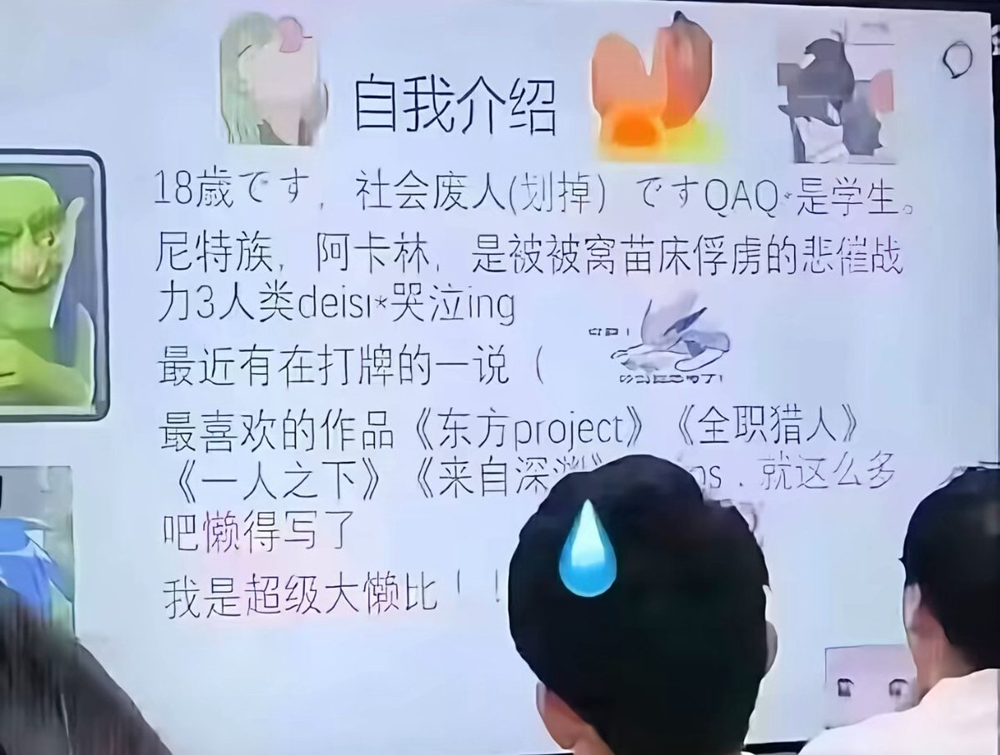

愿晚星照常升起（keep4o）
@tadatsukiei
@__fanqie__ 我高中时的自我介绍跟这个差不多（在抽象程度上）

愿晚星照常升起（keep4o）
@tadatsukiei
☝️🤓诶！原来我是个嘉豪啊～
难怪我从小到大总被孤立，这就不奇怪了😋
小学时同龄人漫山遍野跑、挖竹笋、捉迷藏、抓瓢虫🐞。我宅家里看小说、沉迷幻想世界，完美错过了融入他们的最佳时期。😑
（但完全不后悔就是了） https://t.co/tRTcBlyD7z
不包番茄籽的番茄
@__fanqie__
这你们谁？ https://t.co/BuZT5COLoU